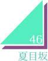

ストーリー
早稲田祭の時期に必ず現れる”アイツら”が舞台を沸かす 日常では潜んでいたものたちが、様々なトラブルや事件と出会う物語 出会った先で何が起こるのか、誰が祭りを沸かすのか 11月4日、暮れの大隈講堂ステージを見逃すな!!
早稲田祭の時期に必ず現れる”アイツら”が舞台を沸かす 日常では潜んでいたものたちが、様々なトラブルや事件と出会う物語 出会った先で何が起こるのか、誰が祭りを沸かすのか 11月4日、暮れの大隈講堂ステージを見逃すな!!
下駄っぱーず
私たちは、早稲田の踊る下駄集団「下駄っぱーず」です！下駄を履いてリズムを刻む世界で唯一無二 、文字通りのオールジャンルダンスパフォーマンスサークルとして全国各地を練り歩き、会場に笑顔を お届けしています！「ムゲンダイ」というテーマのもと、常に新しい挑戦を続けてきた私たちのパッシ ョンで、中夜祭も存分に盛り上げさせていただきます！どうぞご期待ください！
早稲田大学よさこいチーム東京花火は、学生チームでは珍しい高知系よさこいチームとして、150人 で活動しています。男振りの力強さ、女振りの扇子を用いた華麗な舞が魅力の一つです。また、学生チ ームには珍しい纏も演舞に取り入れております。また、振り、曲、衣装、MCを学生が主体となり制作し 、東京花火らしさを常に意識しながら日々活動に励んでいます。中夜祭では、表情豊かなパフォーマン スにより多彩な世界観をお見せ致します。
よさこいチーム
東京花火
バンカライズム
万色主義
あなたは野心を持っていますか。現代を生きる中で、本当にやりたいことを見失ってはいませんか。 周りに認めてもらえないこと、他人と異なることを恐れていませんか。バンカライズムは、そんなあ なたの野心に火をつけるために踊る「早稲田の学ラン雑技団」です。たとえ人と違っても、何かに夢 中になるあなたは美しいと我々が証明してみせます。あなたの心の叫びを体現したようなパフォーマ ンスをお楽しみください。
みなさんこんにちは！夏目坂46です！私たちは、2019年に結成された早稲田大学発のアイドルコピーダンスサークルです！坂道系を中心に、様々なアイドルの曲をコピーさせていただいています！普段はUNIDOLというアイドルコピーダンスの大会での優勝を目指して様々な活動しています。公式snsやその他メンバーの個人snsもあるので気になった方は是非チェックしてみてください！
夏目坂46
